Faked cover made in Livorno in the 1890's.
Return To Catalogue - Romagna (Italy) - Italy
Note: on my website many of the
pictures can not be seen! They are of course present in the
catalogue;
contact me if you want to purchase the catalogue.
Currency: 100 Bajocchi = 1 Scudo
Forged cancels on genuine stamps exist (these are usually very difficult to detect).
Faked cover made in Livorno in the 1890's.
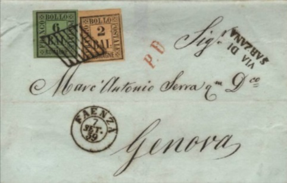
Besides reprint-forgeries (which are the most common forgeries of Romagne), other forgeries exist. Examples:
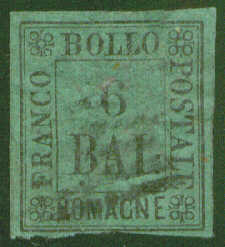


Left genuine 6 Bai, others forgeries of the 6 Bai, also a 3 Bai
made by the same forger
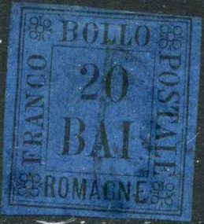
2 b and 20 b forgeries, made by the same forger.


A comparison with a genuine stamp shows that in the above forgeries, the lettering is spaced differently (for example the "O" of "FRANCO" is too far from the top right ornament). The "6" is also too thin. The "2" in the 2 b and 20 b are totally different from the genuine stamps. The dots behind "BAI" are placed too far apart.

Other forgeries with very ragged letters and only one dot behind
"BAI", also the "6" in the 6 b value is too
small
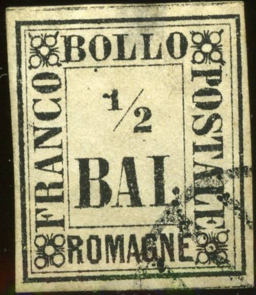


(A forgery with different lettering, for example the
"P" of "POSTALE" and a very weird cancel. The
top of the "5" in the 5 b value is incorrect).
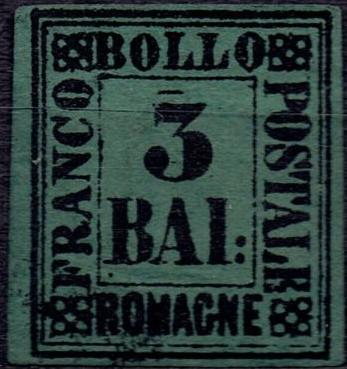 
Other forgeries with the lettering different (for example the
almost closed central part of the "O" of
"FRANCO" and the large upper serif and missing lower
serif of the "C" of this word) and the top of the
"5" incorrect in the 5 b value. Also the "P"
and "O" of "POSTALE" are touching. There is a
line on top of the "3" in the 3 Bai value


Forgeries of the 3 Bai, note the strange "3", the line
on top of this "3" and the break in the line below the
"R" of "ROMAGNE".
(Forgery of the 8 b, made by the same forger, reduced size)
In this forgery the "8" is of a wrong type (compare with a genuine stamp).
The next two forgeries have the upper downstroke of the "F" of "FRANCO" too small. The ornaments in the corners are not nicely done; for example in the upper right corner the ornament seems to be slanting upwards. There are many more differences with the genuine stamps (see for example the lettering):

Some forgeries with very clumsy and too large corner ornaments; also note the 'hook' at the "1" in the 1/2 b and 1 b values. The ":" behind "BAI" is not placed vertically, but slanting instead. The "2" in the 2 b value is also different from the genuine stamps:
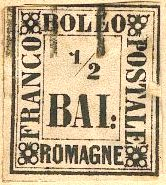


Another set of forgeries:
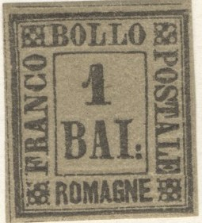


Note the crude lettering and the corner ornaments. Also the dots
behind "BAI" are round instead of squarish.

Forgery of the 1 b with the '1' different. There is also no serif
to the bottom of the "C" of "FRANCO".

Forgery with the ":" behind "BAI" placed too
high.


Another forgery set wtih lettering badly done, see for example
the "R" of "ROMAGNA" or the shaved off bottom
left part of the first "O" of "BOLLO". The
numbers are also totally different from the genuine stamps.
Some other primitive forgeries:


(Some other primitive forgeries)
The "A" of "ROMAGNE" should have a flat top,
in this forgery of the 5 Bai it is pointed
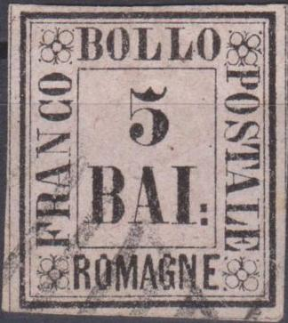
More deceptive forgery of the 5 Bai value, "BOLLO" is
placed to high up and the corner ornaments are clearly not as
regular as they should be.

Forgery with the "B" of "BAI" almost touches
the inner frame line to the left of it.


Forgery with the "8" totally different from a genuine
stamp. Next to it a 20 bai forgery made by the same forger. Note
the deformed corner circles.

Forgery of the 3 Bai with the "3" totally different
from a genuine stamp.


Forgery with no bottom serif to the "C" of
"FRANCO", the "A" of "BAI" is
slanting to the left. An image of this forgery appears in a
Senf(?) Album, but now with a white line through the bottom part.
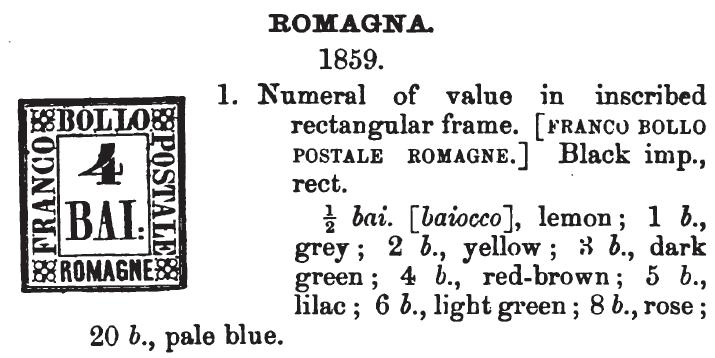
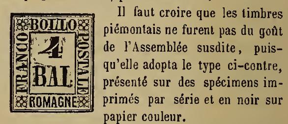
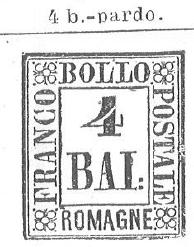

Two forgeries with very badly done corner ornaments.

Primitive 5 Bai forgery.

1/2 Bai forgery
Fournier also made some forgeries of these stamps. I've been told that the headstroke of the "F" of "FRANCO" is too short in these forgeries. Also, in the right upper corner, the genuine stamps always have a white space in between the central circle and the upper right circle. In the Fournier forgeries these circles are perfect circles. In 'The Fournier Album of Philatelic Forgeries' pictures of these forgeries can be found in sheets of 5x6, when they originate from this album they have the overprint "FAUX". Fournier offers these forgeries as 2nd choice forgeries for 2 Swiss Francs (all 9 values together). Fournier forgeries exist uncancelled and cancelled.
In my opinion, the following distinghuishing
characteristics are valid for the individual values:
1/2 b: "2" has a small smudge at the lower left
4 b: Top left part of the "4" is slanting to far to the
left
20 b: "0" is slanting to the left


This is probably a Fournier forgery with a "MASSA"
cancel (the cancel is also forged and is not 'found alone'
according to Roman States Forgeries, the Issue of 1867-1868 by
F.J.Levitsky and Rev. F.A. Jenkins). Next to it a 1 Bai Fournier
forgery and a 20 Bai forgery with the cancel "FAENZA 20 DIC
59" (the year was apparently added later, since it does not
appear on the next scan with Fournier forged cancels) and one
with "RIMINI 17 NOV".
Some of the above mentioned forged Fournier cancels as listed
under Romagna in 'The Fournier Album of Philatelic Forgeries'. I
believe the "CESANA" cancel is misspelt and should be
"CESENA".
The above forged cancels are (the year was
probably added in a later stage in the four circular cancels):
"RAVENNA 5 APR" in a double circle
"FAENZA 20 DIC" in a double circle (with year added
later? See images above)
"FORLI 6 MAG." in a double circle
"RIMINI 17 NOV" in a double circle
"MASSA" in a straight line
"MEDICINA" in a straight line
"CESANA" in a straight line
A genuine "CESENA" cancel not spelled as
"CESANA"
Part of a 'Fournier Album of Philatelic Forgeries' which shows
two sheets of forged Romagne stamps; apparently Fournier also
used the grid cancel as shown above on his forgeries. Uncancelled
Fournier forgeries can also be found in the Fournier Album.
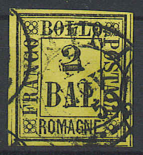
This stamp has a "RIMINI 17 NOV 59" in a double circle
cancel. It very much resembles a Fournier forgery, however a
certificate of genuineness was issued by the
Briefmarkenprufstelle Basel' (Arlesheim) in 2006. Possibly,
Fournier added the year "59" in the cancel before
applying it (the cancel in the Fournier Album of Philatelic
Forgeries does not have a year).

Fournier forgery with "FORLI 6 MAG." in a double
circle, the year "59" was added (the cancel in the
Fournier album does not have a year).


{kind=link}
{kind=link}
{kind=link}
{kind=link}
{kind=link}
{kind=link}
{kind=link}
{kind=link}
{kind=link}